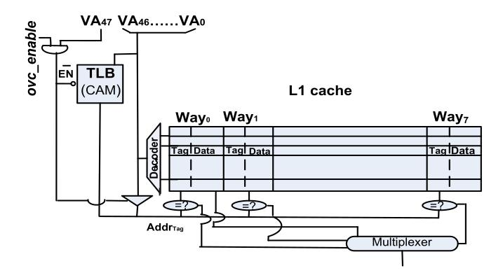
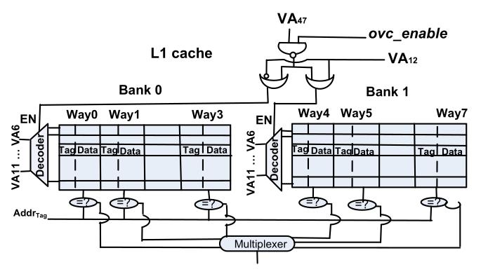

Reducing Memory Reference Energy with Opportunistic Virtual Caching
Arkaprava Basu¹ Mark D. Hill¹ Michael M. Swift¹
¹University of Wisconsin-Madison
ISCA 2012
Problems in VIPT cache
Places constraint on Associativity
Needs TLB access on every cache access
Uses more Energy
Benefits of Virtual cache
Needs address translation only on cache miss
Does not impose an associativity constraint
Access latency decreases
Uses less Energy
Problems in Virtual caches
Synonyms
Homonyms
Page mapping and protection changes
Dirty cache block evictions
Cache coherence
Compatibility with architecture and OS
Opportunistic Virtual Caching
Observation 1:
Synonyms are present but are mostly read only
Observation 2:
TLB invalidations due to page mapping or permission changes are infrequent
Key Idea:
Use both virtual caching and physical caching
OVC Hardware
Determines when to use virtual caching
Opportunistically reduces power
Handle Homonyms and Permission changes
Handle coherence for virtual blocks
When to use virtual caching
One bit OVC_enable register
Virtual address range is partitioned
Uses the MSB of Virtual address
Opportunistically reducing power
 
Handling Homonyms and permission changes
Homonyms are handled using ASID
Both ASID and virtual tag need to match
Permissions changes causes cache flushes
Handling Dirty block evictions and Cache coherence
Both need reverse translation
Stores the Physical tag along with block
Coherence requests checks the Physical tag for the set
Also used for Back invalidations
OS modifications
Predicts when virtual caching is required
Informing hardware to use virtual caching
Ensuring correctness
Predicting when virtual caching is desirable
Allocator predicts which pages to use virtual caching
Safety
: No read write synonyms
VM_SHARED and VM_WRITE/VM_MAYWRITE flags
Efficient
: No frequent permission changes
MAP_DYNAMIC flag
Informing hardware to use virtual caching
Virtual address space is partitioned
Uses MSB to signal virtual caching
Ensuring correctness
Flush the cache on permission changes
Detects when synonyms are written to
Flush after Tainted process executes
Evaluations
Gem5 full system simulation
Modified Linux 2.6.28-4
Benchmarks from Parsec, memcached, bind
CACTI for computing energy
Results
Adds 10% additional space overhead for L1 cache
Doesn't affect runtime very much (within 0.017%)
19% Dynamic energy saved (39% max)
Includes energy spend in TLB and cache hierarchy